显示规则是 With bind the box, you can display the number of cards in the box when searching.
The number rule is
×<相同IDidentical ID>(<进化链其他other in evolutionary tree>)

如果你使用我的箱子功能打开你的游戏数据，你将会获得如下功能。 If you use the My Box feature to open your game data, you will get the following features.
×<相同IDidentical ID>(<进化链其他other in evolutionary tree>)
你保存的数据全部存于浏览器的本地 IndexedDB 内，不会被上传到服务器，因此更换浏览器就需要重新打开数据。 All of the data you save is stored in your browser's local IndexedDB and will not be uploaded to the server, so changing your browser will require you to reopen the data.

因为此功能不会自动更新游戏数据，需要重新导出，因此强烈建议在模拟器内使用data048.bin实现多设备登录。
Because this feature does not automatically update game data and requires re-export, it is highly recommended to use data048.bin within the Emulator for multi-device login.
你需要在在电脑上安装一个能运行智龙迷城的安卓模拟器，比如 蓝叠模拟器国际版、夜神模拟器国际版。选国际版是因为自带 Google Play，国内版没有。国际版安装好后也可以选择简体中文，所以没语言障碍。 You'll need to install an Android simulator on your PC that runs P&D, such as BlueStacks, NoxPlayer.
如果希望直接使用root后的设备，请参考HttpCanary方法。 If you wish to use the rooted device directly, refer to the HttpCanary method.
官方网站：https://www.bluestacks.com/tw/bluestacks-5.html Official website:https://www.bluestacks.com/bluestacks-5.html
自行安装智龙迷城游戏并测试是否能启动。可以任意新建账号，并下载完成所有的游戏数据。
Install P&D by yourself and test if it can be launched. You can create any new account and download all the game data.
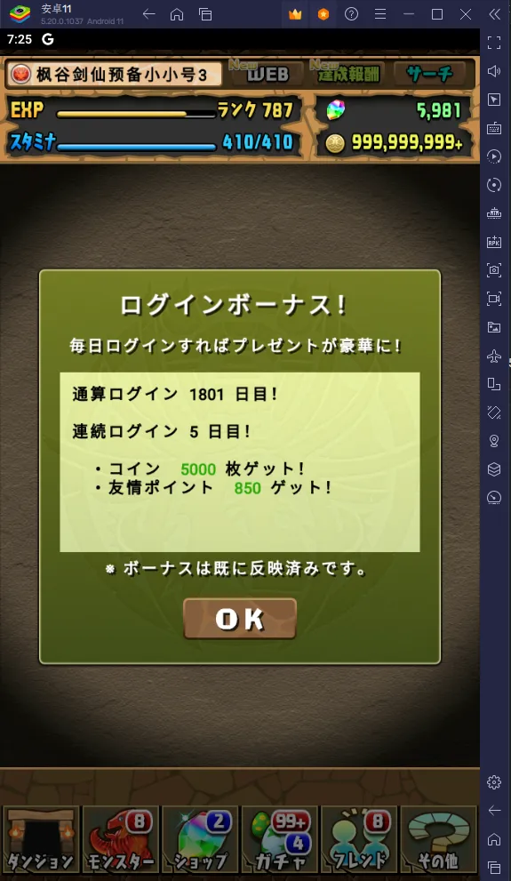
如果闪退，打开蓝叠多开器，添加一个能运行智龙迷城的版本，书写本文档时为 v5.20 版的安卓9-64位和打开 Hyper-V 后的安卓11-64位。
If P&D can't be opened, run the BlueStacks Multi-Instance Manager and add a version that runs P&D, currently is Android 9 64-bit and Android 11 64-bit with Hyper-V in v5.20 of this document writing.
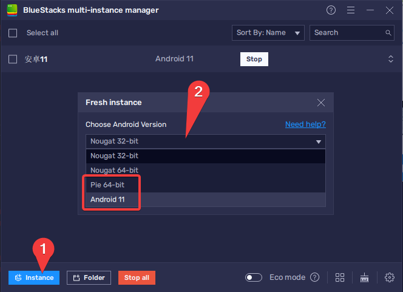
官方网站：https://tw.bignox.com/ Official website: https://www.bignox.com/
自行安装智龙迷城游戏并测试是否能启动。可以任意新建账号，并下载完成所有的游戏数据。
Install P&D by yourself and test if it can be launched. You can create any new account and download all the game data.

如果闪退，打开多开器，添加一个能运行智龙迷城的版本，书写本文档时为 v7.0.2.1 版的安卓7-64位。
If P&D can't be opened, run the Multi-Drive and add a version that runs P&D, currently is Android 7 64-bit in v7.0.2.1 of this document writing.

data048.bin
Extract data048.bin from your Android device
智龙迷城的账号唯一识别码(GUID)储存于/data/data/jp.gungho.pad/files/data048.bin中。
The unique account number (GUID) of P&D is stored in the /data/data/jp.gungho.pad/files/data048.bin.
只需要复制这个文件到另一台设备上的相同路径，就不需要 谷歌 引继，可以随时切换设备登录账号。 Simply copy this file to the same path on another device, you don't need to sign in by Google, you can switch device logins at any time.
用处 use:
Root 用户可以直接访问这个文件，复制到另一台设备，并覆盖相同文件即可。 Root users can access the file directly, copy to another device, and overwrite the same file.
无 Root 用户目前可以使用 Android 调试桥 (adb) 导出data048.bin，请看接下来的教学。
No-Root users can currently export data048.bin using Android Debug Bridge (adb), see the next lesson.
如要在通过 USB 连接的设备上使用 adb，您必须在设备的系统设置中启用 USB 调试（位于开发者选项下）。如需使用 WLAN 连接到设备来使用 adb，请参阅通过 WLAN 连接到设备。 To use adb with a device connected over USB, you must enable USB debugging in the device system settings, under Developer options. To use adb with a device connected over Wi-Fi, see Connect to a device over Wi-Fi.
将你的手机用USB线缆连接到电脑上。
Connect your phone to your computer with a USB cable.

打开 USB 调试。由于不同手机“开发者选项”所在的位置或名称可能有所不同，请您自行搜索您的手机型号的打开方式。
Turn on USB debugging. On different devices, the Developer options screen might be located or named differently, please search for your phone.

如果你在设备管理器内能看到 ADB interface 驱动，那么你很可能可以使用 adb 工具。
否则你需要安装手机设备制造商的 USB 驱动程序或者尝试通用 ADB 驱动。
If you can see the ADB interface driver in Device Manager, you're likely to use the adb tool.
Otherwise you'll need to install OEM USB drivers or try Universal ADB Drivers.

下载 SDK Platform Tools，adb 工具在里面。 Download SDK Platform Tools, the adb tool in it.
您可以通过从 platform-tools 目录执行以下代码验证设备是否已连接。如果已连接，您将看到设备名称以“设备”形式列出。
You can verify that your device is connected by executing the following code from the platform-tools directory.
adb devices

解锁手机，执行以下代码对游戏数据进行备份。在手机上弹出的确认窗口中输入任意密码并记住或留空。
Unlock your phone, perform the following code to back up game data. Enter any password and remember or leave it blank in the confirmation window that pops up on your phone.
adb backup <包名Package Name> -f pad.ab
包名Package Name:
jp.gungho.padjp.gungho.padHTjp.gungho.padENjp.gungho.padKO
你需要使用Android backup extractor来解密 ab 文件。同时它是用 Java 编写的，你需要安装 Java 11 运行时或更高版本。 You need to use Android backup extractor to decrypt ab files. And it's written in Java, so you need to install the Java 11 runtime or later.
执行以下代码进行解密。
perform the following code to decrypt.
java -jar abe.jar unpack pad.ab pad.tar [备份密码backup password]

打开这个 pad.tar 压缩包你将会看到 data048.bin
Open this pad.tar package and you'll see the data048.bin

adb backup 但是可以使用 adb restore，所以可以在低版本的安卓模拟器或老手机内登录游戏，然后使用 adb backup 备份，使用 adb restore 导入到手机。
Android 13 failed with adb backup but successfully use adb restore, so you can log in to the game in an Android emulator (or an older phone), then use adb backup to back up from emulator, and use adb restore to import to your phone.
data048.bin 导入模拟器
Import data048.bin into the simulator
你需要先打开模拟器的 root。 You need to open the emulator's root first.
蓝叠模拟器打开root有些复杂 The BlueStacks emulator is a bit complicated to open root
打开模拟器的配置文件，默认在C:\ProgramData\BlueStacks_nxt\bluestacks.conf。
Open the configuration file of the emulator, default in C:\ProgramData\BlueStacks_nxt\bluestacks.conf.
如果忘记你安装在哪里，可以通过注册表查询reg query HKLM\SOFTWARE\BlueStacks_nxt\ /v UserDefinedDir。
IIf you forgot where you installed it, you can query the registry reg query HKLM\SOFTWARE\BlueStacks_nxt\ /v UserDefinedDir.
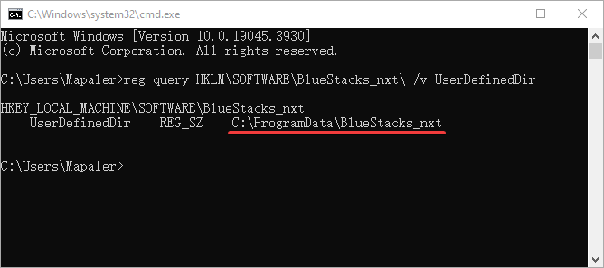
搜索所有名称里带“root”的配置，并修改值为 1。
Search for all configurations with "root" in the name and change the value to 1.
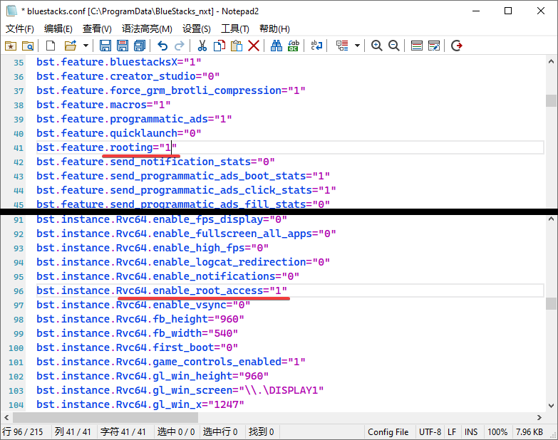
然后将此文件设置为只读。
Then make this file read-only.
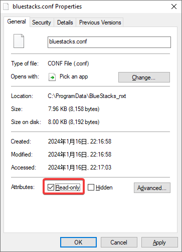
使用完成后，请将上述步骤还原。 Once you are done, restore the above steps.
如果你觉得这一步麻烦，你也可以直接使用我写好的脚本程序。
If you fell troubled by this step, you can also directly use the script I wrote.
https://github.com/Mapaler/BlueStacksScript
下载蓝叠打开root.bat和蓝叠打开root.ps1两个文件后放在一起，运行蓝叠打开root.bat就可以一键打开/关闭root
Download the two files of 蓝叠打开root.bat and 蓝叠打开root.ps1 and put them together, run 蓝叠打开root.bat to open/close root with one step
打开模拟器的 Root，并重启。
Open the simulator's root and restart.

使用data048.bin覆盖模拟器内的/data/data/jp.gungho.pad/files/data048.bin，并推荐删除data048.bin和mons文件夹以外的其他文件。
Use data048.bin override the /data/data/jp.gungho.pad/files/data048.bin in the emulator, and it is recommended to delete files other than data048.bin and mons folders.

打开游戏，然后你就可以在手机和模拟器登录同一个帐号了。
Open the game. Then you can log in to the same account on your phone and emulator.

注意：note:
data048.bin失效。
Sign-in by Google Account or Social Media Linking causes the server to regenerate a unique account number(GUID), and invalidate the old data048.bin.
data048.bin。
For another phone that doesn't have Root, you can import data048.bin using the following code.
adb restore pad.ab
然后你可以选择在安卓内使用 APP 和电脑上用代理软件两种方式抓包。 You can then choose to sniffer in both use the APP within Android and proxy software on your PC.
请自行从网上搜索并安装 HttpCanary（已被谷歌商店下架）。
Please search the web and install HttpCanary yourself (It's blocked by google store).

打开模拟器的 Root，并重启。
Open the simulator's root and restart.
运行 HttpCanary，按照提示配置本地 VPN 和导入证书（系统可能要求设置密码）。
Run HttpCanary, follow the prompts to configure the local VPN and import certificates (The system may require a password).


授予 Root 权限，将证书移至系统目录。安卓 7 以上必须这样做才能嗅探到 https 的流量。
Grant Root permission to move the certificates to the system directory. Android 7 or above must do this to sniff out https traffic.

可以根据需要关闭 Root 了（日服客户端需要关闭 Root 才能运行）。 Root can be closed as needed. (The Japanese version client needs to close Root operation.)
HttpCanary 菜单内添加智龙迷城为目标应用，可减少其他流量的干扰。
Add P&D to the target app in HttpCanary menu, to reduce interference with other traffic.

回到首页，点击主按钮开始嗅探流量。
Back on the home page, click the main button to start sniffing traffic.

运行智龙迷城游戏，直到登陆成功。
Run the P&D game until log in successfully.

返回 HttpCanary，找到padsv.gungho.jp/api.php?action=get_player_data网络请求。（一般紧跟api.php?action=login）
Go back to HttpCanary to find the network request padsv.gungho.jp/api.php?action=get_player_data.(Generally followed by api.php?action=login)

进入该条目，保存响应体。
Go to the entry and Save Response Body.

使用文件管理器找到手机储存/HttpCanary/download/[你保存的名称]/response_body.html，这个就是你的游戏数据。
Use the file manager to find [Phone Storage]/HttpCanary/download/[The name you saved]/response_body.html, and this is your game data.

打开模拟器的电脑共享目录。
Open the simulator's PC shared folder.

将response_body.html复制到手机储存/Download文件夹，即可在电脑上看到文件。
Copy response_body.html to [Phone Storage]/Download folder to see files on your PC.

其他模拟器拥有类似传输数据到真实电脑的功能，在此不再赘述。
Other emulators have similar features for transferring data to a real computer, please check it yourself.
到我的箱子功能里打开即可。
Open my box function and open it.

每次获取新的数据，重复 启动 HttpCanary > 登录游戏 > 保存响应体 的步骤。 Each time you get new data, repeat the steps to Start httpCanary > Log in to the game > Save Response Body.
如果希望不要每次都重新使用 SNS 登录游戏，可以查看如何多设备登录。 If you want to not reuse the SNS login game every time, you can see How to login with multiple devices.
在电脑上安装Fiddler Classic。
Install Fiddler Classic on your PC.

打开 Fiddler 的自动解码和流式传输。
Turn on Fiddler's auto Decode and Stream.

为了使模拟器能连接 Fidder，打开允许远程计算机连接的功能。
同时为避免抓到其他无用的流量，推荐你关闭自动设为系统代理的选项并重启 Fidder。
In order for the simulator to connect to Fidder, turn on the feature that Allow remote computers to connect.
And for avoid catching unwanted traffic, it is recommended that turn off the option Act as the system proxy on startup and restart the Fidder.

可以看到默认的代理端口是8888，如果需要修改，请自行记住修改后的端口号。
You can see that the default proxy port is 8888, if you need to modify it, please remember the modified port number.
打开解密 HTTPS 流量，警告询问你是否添加证书到电脑，可以选择否，因为我们不需要解密电脑上的流量。
Turn on decrypt HTTPS traffic. The warning asks if you want to add the certificate to your PC and you can choose No because we don't need to decrypt traffic from your PC.

点击 Actions-Export Root Certificate to Desktop 将根证书导出到桌面，之后你将会在桌面上看到一个FiddlerRoot.cer文件。
Click Actions-Export Root Certificate to Desktop. You will then see a file FiddlerRoot.cer on your desktop.

如果你有 openssl 程序，你可以直接将FiddlerRoot.cer转换到安卓需要的格式。
If you have openssl CLI, you can directly convert FiddlerRoot.cer to the format android need.
如果没有 openssl ，你可以在桌面按住 Shift 点击鼠标右键，在此打开 PowerShell。
If you don't have openssl, press and hold Shift on the desktop and right-click to open PowerShell here.

在 PowerShell 中，执行以下代码，之后你将会在桌面上，见到一个269953fb.0文件。
In PowerShell, execute the following codes, and then you'll see a 269953fb.0 file on your Desktop.

蓝叠无法通过 root 的方式放入证书文件，因此需要直接修改虚拟磁盘文件。 The BlueStacks cannot put the certificate file in emulator by root, so you need to modify the virtual disk file directly.
找到蓝叠模拟器的 Root.vhd 虚拟磁盘文件。默认在C:\ProgramData\BlueStacks_nxt\Engine\<安卓版本>\Root.vhd，安卓9是 Pie64，安卓11是 Rvc64。
Locate the Root.vhd virtual disk file for the BlueStacks emulator. By default, C:\ProgramData\BlueStacks_nxt\Engine\<Android version>\Root.vhd, Android 9 is Pie64, Android 11 is Rvc64.
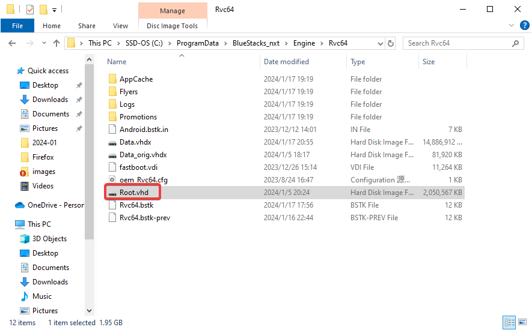
如果忘记你安装在哪里，可以通过注册表查询reg query HKLM\SOFTWARE\BlueStacks_nxt\ /v UserDefinedDir。
IIf you forgot where you installed it, you can query the registry reg query HKLM\SOFTWARE\BlueStacks_nxt\ /v UserDefinedDir.
由于 安卓（Linux） 的磁盘格式是 Ext3/4 ，Windows下无法识别，所以我们需要使用一些软件来访问。 Since the disk format of Android (Linux) is Ext3/4 and cannot be recognized under Windows, we need to use some software to access it.
选择 磁盘-打开虚拟磁盘文件，打开Root.vhd。
Choose Disk-Open Virtual Disk File, and open Root.vhd.
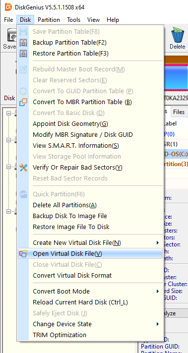
找到 主分区(0)/android/system/etc/security/cacerts。在右侧文件列表里面点击右键，选择复制文件到当前分区，将前面生成的269953fb.0放入这里。
Locate Primary(0)/android/system/etc/security/cacerts. Right-click in the file list on the right, select Copy Files to Current Partition, and put the generated 269953fb.0 here.
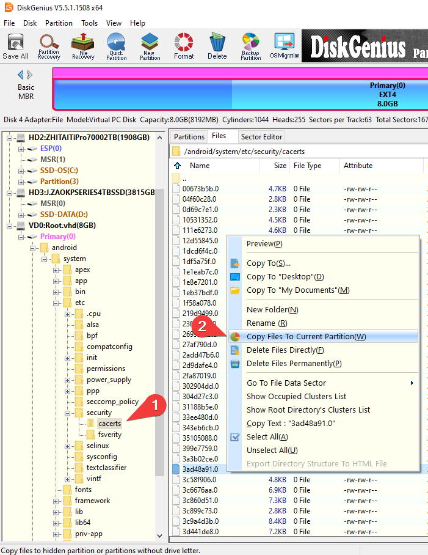
选择 磁盘-关闭虚拟磁盘文件。
Choose Disk-Close Virtual Disk File.
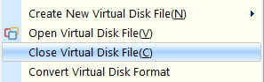
这个免费软件的兼容性不是很好，所以需要你自己测试版本。 The compatibility of this free software is not very good, so you need to test the version yourself.
请先尝试安装 0.71 版本，如果无法使用再测试 0.69 或 0.68 版本。 Try installing version 0.71 first, and then test version 0.69 or 0.68 if that doesn't work.
运行 Ext2 Volume Manager，选择 工具与设置-配置文件系统驱动。
如果 当前状态 显示的是 Ext2Fsd is already started. 那么就说明成功运行了。
Start Ext2 Volume Manager, choose Tools-Service Management.
If the Service status says Ext2Fsd is already started., Then it ran successfully.
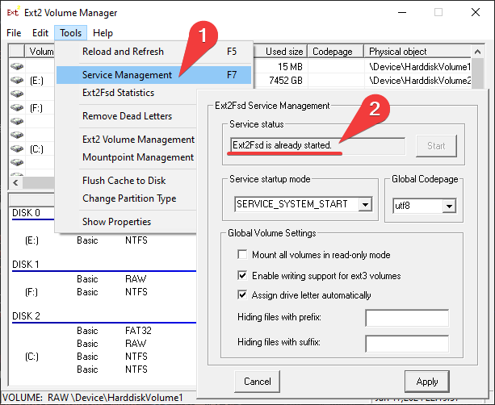

7 或 F7 选择 7) 禁用驱动程序强制签名。
In the boot menu after a reboot, press 7 or F7 on your keyboard to select 7) Disable driver signature enforcement
Win10 下可以直接双击打开 Root.vhd，会提示你 无法装载文件，点击确定忽略此提示。
Under Win10, you can directly double-click to open Root.vhd, and will prompt you Could't Mount File. Click OK to ignore the prompt.
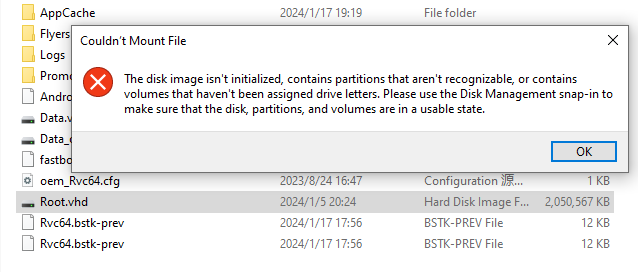
或者你可以在开始按钮上单击右键，打开磁盘管理。
Or you can right-click on the Start button to open Disk Management
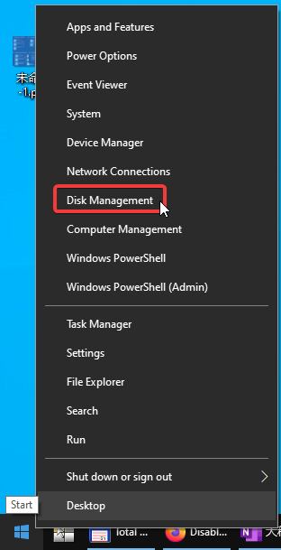
单击任意空白处，然后点击 操作-附加 VHD，并打开 Root.vhd。
Click on any blank space, then click Action-Attach VHD, and open Root.vhd.
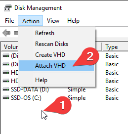
运行 Ext2 Volume Manager，选中刚刚挂载的 EXT4 格式磁盘。右键菜单内选择加载装配点盘符或直接按 F4 快捷键，给虚拟磁盘分配一个盘符。
Start Ext2 Volume Manager, select the EXT4 format disk you just mounted. Right-click the menu and select Assign Drive Letter or press the F4 shortcut key directly to assign a drive letter to the virtual disk.

就和你平时操作文件一样将证书文件复制到 <盘符>:\android\system\etc\security\cacerts。
Copy the certificate file to the <Drive Letter >:\android\system\etc\security\cacerts as you normally would.

回到 Ext2 Volume Manager，选中刚刚挂载的 EXT4 格式磁盘。右键菜单内选择保存系统缓冲或按 F11 快捷键，保存系统缓冲到磁盘。
Back to Ext2 Volume Manager, select the EXT4 format disk you just mounted. Right-click the menu and select Flush Cache to Disk or press the F11 shortcut to save the system cache to disk.
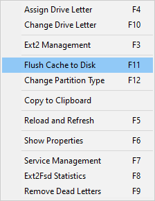
在开始按钮上单击右键，打开磁盘管理。
Right-click on the Start button to open Disk Management
找到我们附加的虚拟磁盘，右键菜单内选择 分离 VHD。
Find the virtual disk we have attached, and select Detach VHD from the context menu.
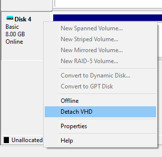
前面的导入 data048.bin 的步骤也可以按照此方法完成，游戏 APP 数据保存在另一个 Data.vhdx 虚拟磁盘里。
The previous steps to import data048.bin can also be completed in this way, and the game APP data is saved in another virtual disk Data.vhdx.
打开模拟器的 Root，并重启。
Open the simulator's root and restart.
使用共享文件夹，将269953fb.0转移到模拟器。
Use the shared folder to transfer 269953fb.0 to the simulator.

将269953fb.0复制到/system/etc/security/cacerts文件夹内。
Copy the 269953fb.0 to the /system/etc/security/cacerts folder.

打开269953fb.0文件属性，设置权限为-rw-r--r--(644)。
Open 269953fb.0 file properties and set permissions to -rw-r--r--(644)

重启模拟器，以使证书被系统读取。 Restart the simulator so that the certificate is read by the system.
可以根据需要关闭 Root 了（日服客户端需要关闭 Root 才能运行）。 Root can be closed as needed. (The Japanese version client needs to close Root operation.)
在模拟器设置内打开模拟器的安卓调试桥功能，记住这里的连接地址。
Turn on the Android Debug Bridge feature in the emulator's settings. Remember the connection address here.
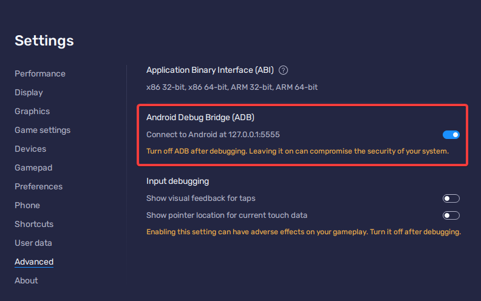
使用蓝叠程序自带的 HD-Adb 或原版 adb 执行后续操作。
Use HD-Adb that comes with BlueStacks program or original adb to take the next steps.
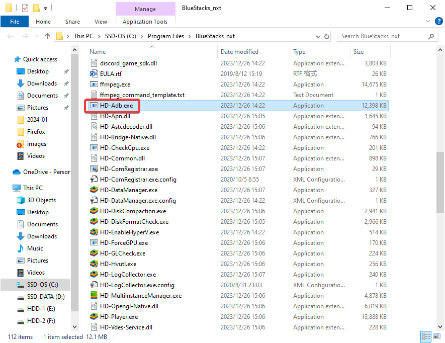
在此处打开命令行。如果使用 PowerShell，后面的代码你需要在相对路径前加上“.\”，比如 .\HD-Adb
Open the command line here. If you're using PowerShell, you'll need to add ".\" before the relative path, such as .\HD-Adb
使用以下代码连接此模拟器。
Connect this emulator using the following code.
HD-Adb connect 127.0.0.1:5555
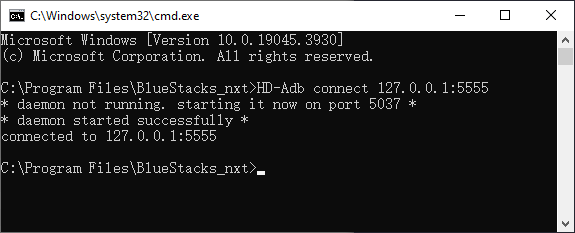
使用以下代码测试是否连接模拟器。
Use the following code to test whether the emulator is connected.
HD-Adb devices
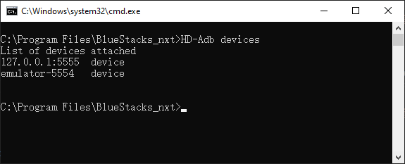
可以看到 emulator-5554 其实也可以用来控制此模拟器，但是它并不是总是可用。
As you can see, the emulator-5554 can also be used to control this emulator, but it is not always available.
使用以下代码设置此模拟器的网络代理。10.0.2.2 是蓝叠内默认的真实主机地址。
Use the following code to set up a network proxy for this emulator. 10.0.2.2 is the default real host address in the BlueStacks.
HD-Adb -s 127.0.0.1:5555 shell settings put global http_proxy 10.0.2.2:8888
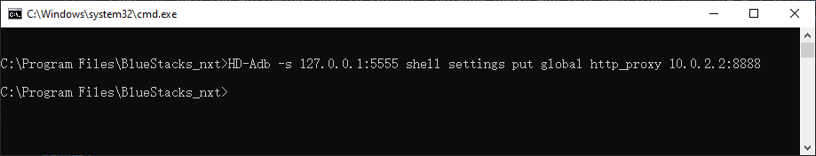
如果你需要取消代理，请使用如下代码。
If you need to delete the proxy, please use the code below.
HD-Adb -s 127.0.0.1:5555 shell settings put global http_proxy :0
修改模拟器内 WiFi 的代理，改为手动模式，主机名为 172.17.100.2（夜神内默认的真实主机地址），端口号为 8888。
Modify the proxy of WiFi in the simulator to manual mode, the host name is 172.17.100.2(The default real host address in Nox), port number 8888.

运行智龙迷城游戏，直到登陆成功。
然后在 Fidder内找到padsv.gungho.jp/api.php?action=get_player_data网络请求。（一般紧跟api.php?action=login）
Run the P&D game until log in successfully.
Go back to Fidder to find the network request padsv.gungho.jp/api.php?action=get_player_data.(Generally followed by api.php?action=login)

在右键菜单内选择 Save-Response-Response Body... 保存响应体。
Right-click and select Save-Response-Response Body....

到我的箱子功能里打开即可。
Open my box function and open it.
每次获取新的数据，重复 开启 Fidder > 模拟器内登录游戏 > 保存响应体 的步骤。 Each time you get new data, repeat the steps to Start Fidder > Log in to the game in the simulator > Save Response Body.
如果希望不要每次都重新使用 SNS 登录游戏，可以查看如何多设备登录。 If you want to not reuse the SNS login game every time, you can see How to login with multiple devices.
Fidder 可以使用脚本自动保存响应体。 Fidder can use scripts to automatically save Response Body.
在 Fidder 脚本中，快速跳转到OnBeforeResponse。
In the Fidder Script, quickly jump to the OnBeforeResponse

将以下代码插入OnBeforeResponse代码括号内，并保存。
Insert the following code into the parenthesis of the OnBeforeResponse code and save it.

记得将第一行的文件路径修搞到你自己的文件夹，因为是转义符，右斜杠需要写两次。
Remember to fix the first line of file paths to your own folder, because it's an escape character, and the right slash needs to be written twice.